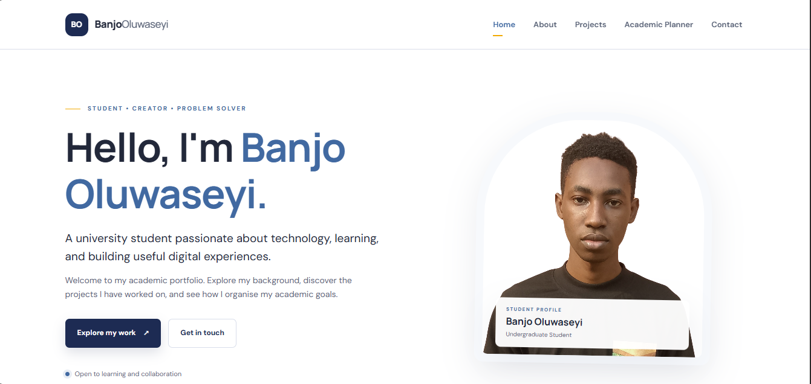
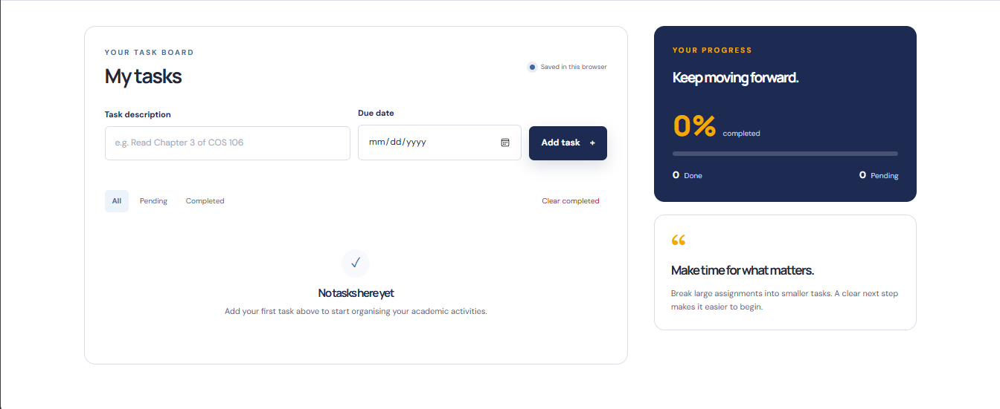
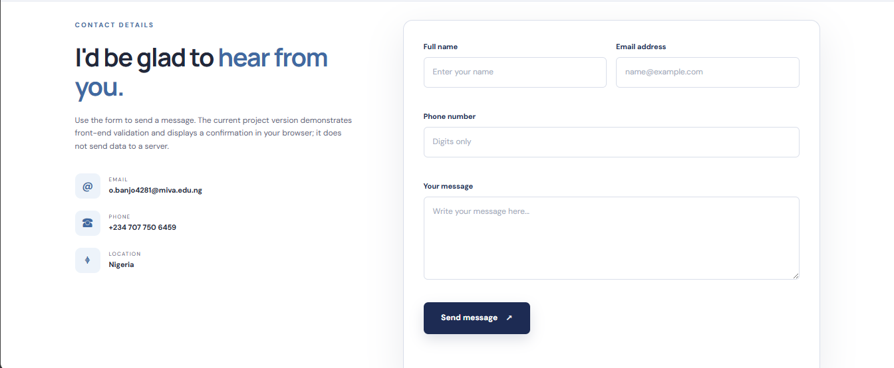

Personal Portfolio Website
A responsive website designed to introduce a student, present their skills, and showcase completed work in a clear layout.
View sample website →SELECTED WORK
These sample projects demonstrate practical learning, creativity, and the application of web technologies.

A responsive website designed to introduce a student, present their skills, and showcase completed work in a clear layout.
View sample website →
A simple task management tool that allows students to add academic activities, mark tasks complete, and remove tasks.
Try the planner →
A contact form with required-field checks and validation for email addresses and digit-only phone numbers.
View contact form →